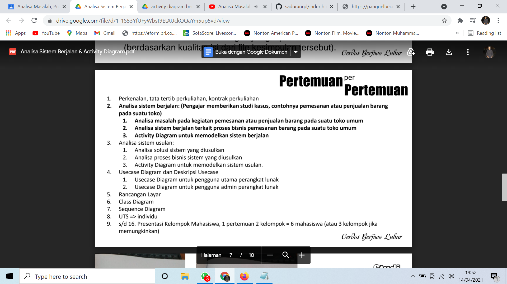
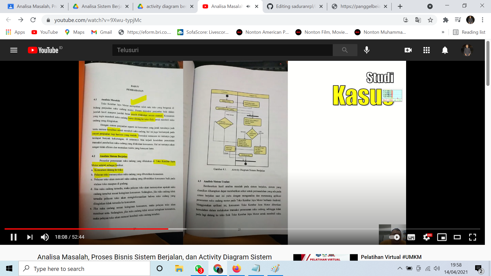

NIM : 1811500011
NAMA : Muhammad Ilham Febrian
Kelompok : TI6J
Hasil saya menyadur materi dan penjelasan video pada pertemuan ke 2:
- Perhitungan nilai kehadiran untuk setiap pertemuan dengan membuat file index.html di setiap direktori pada repisotary github yang ditandai dengan angka, contoh nama folder (2) untuk pertemuan ke-2, dst.
- Perhitungan nilai tugas dinilai berdasarkan kualitas atau isi dari konten file index.html disetiap pertemuan yang disadur.
- Analisa masalah, kemudian dilanjutkan dengan proses Menganalisa sistem berjalan atau Analisis Sistem Berjalan yang berisi SOP.


- Membuat Activiy Diagram


hasil file project astah buatan saya :D (Activity Diagram Sistem Berjalan) Download